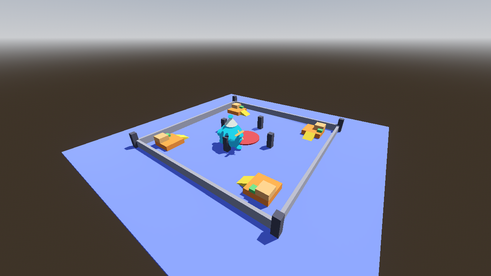
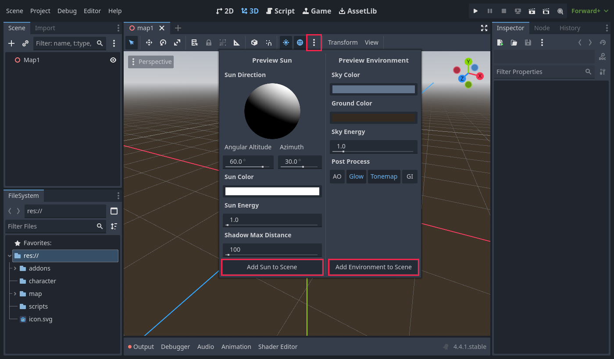
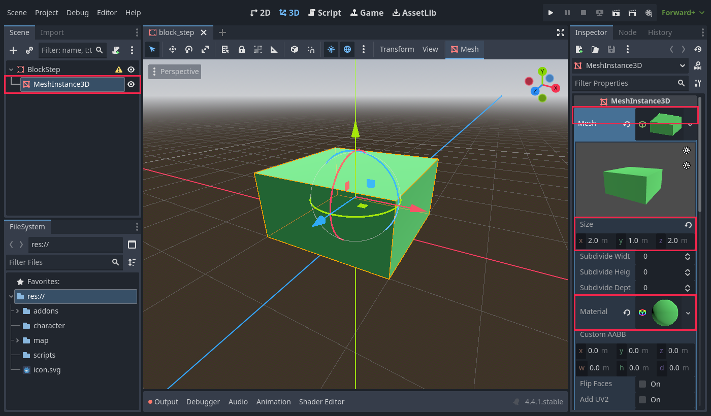
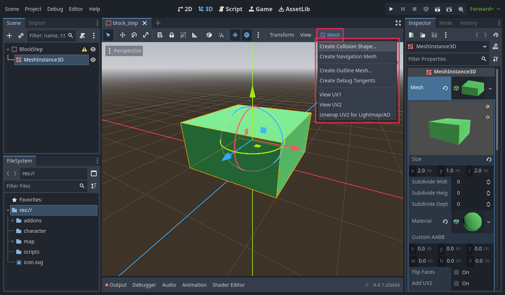
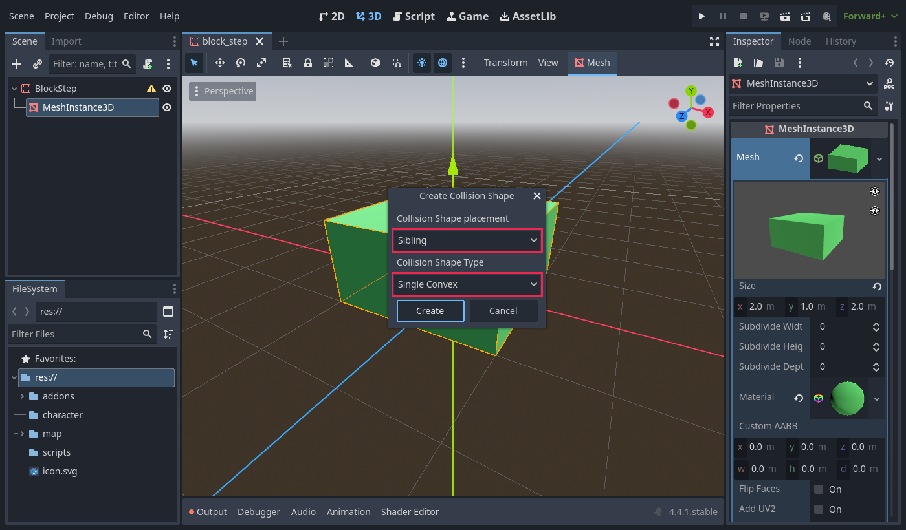
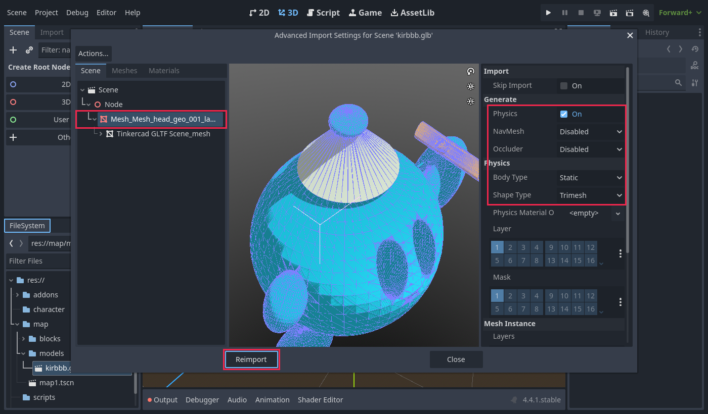
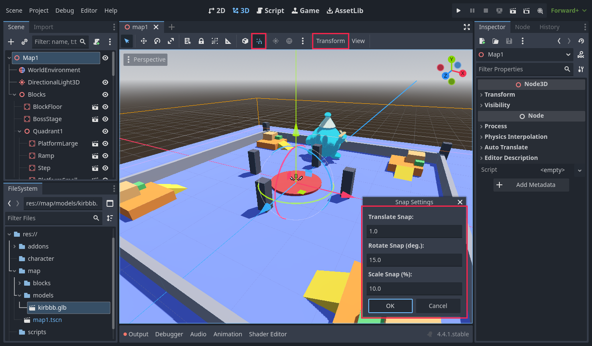

Building the Boss Arena
Build a 3D arena in Godot from reusable blocks, including 3D models you made yourself (.glb). This lesson covers the map only. Players, the boss and multiplayer come in later lessons.

- What StaticBody3D, MeshInstance3D and CollisionShape3D do, and why a block needs all three
- How to save a block as its own scene and reuse it many times
- How to import a .glb model and give it collision
- How to place blocks precisely using snapping
1Set up the folders
In the FileSystem panel (bottom left), right-click res:// and choose Create New → Folder. Make this structure:
map/ blocks/ ← one .tscn file per block type models/ ← your .glb files go here map1.tscn ← the arena itself
Keeping the source models (models/) apart from the blocks you place (blocks/) keeps the project tidy as it grows.
2Create the map scene
- Choose Scene → New Scene, then Other Node, and pick Node3D. Rename it
Map1. - Add light and a sky. In the 3D viewport toolbar, click the ⋮ menu next to the sun and globe icons. Choose Add Sun to Scene and Add Environment to Scene.
- Add a child Node3D named
Blocks. Every block will go inside it. - Save the scene as
map/map1.tscn.

Map1 (Node3D) ├── WorldEnvironment ├── DirectionalLight3D └── Blocks (Node3D)
3Make your first block
A block needs three nodes. Each one has a different job:
| Node | Job |
|---|---|
| StaticBody3D | The root node. It tells the physics engine that this object is solid and never moves. |
| MeshInstance3D | What you see: the shape and color. |
| CollisionShape3D | What you touch: the invisible shape that players stand on. |
3a. The visible part
- Choose Scene → New Scene → Other Node and pick StaticBody3D. Rename it
BlockStep. - Add a child MeshInstance3D. In the Inspector, set Mesh → New BoxMesh. Click the BoxMesh and set Size to
(2, 1, 2). - In the BoxMesh's Material slot, choose New StandardMaterial3D, then pick an Albedo → Color.

3b. The collision: pick one of two ways
Way A: let Godot make it
- Make sure the 3D tab is open (top center of the editor).
- Select the MeshInstance3D. A Mesh menu appears in the viewport toolbar.
- Choose Mesh → Create Collision Shape…
- For Placement, choose Sibling. For Type, choose Single Convex.
Way B: add it by hand
- Select the root StaticBody3D.
- Add a child CollisionShape3D.
- Set Shape → New BoxShape3D.
- Set its Size to the same size as the mesh:
(2, 1, 2).


Which Create Collision Shape type should you choose?
| Type | Use it for |
|---|---|
| Single Convex | Boxes, ramps and other simple shapes. It fits them exactly and is fast. Use this for most blocks. |
| Trimesh | Complex models (rocks, statues, arches). It follows every triangle exactly. Only for things that never move. |
| Simplified / Multiple Convex | Complex objects that move. You don't need these for a map. |
With Way B, use the collision shape that matches the mesh:
| Mesh | Collision shape |
|---|---|
| BoxMesh | BoxShape3D (same size) |
| CylinderMesh | CylinderShape3D (same radius and height) |
| SphereMesh | SphereShape3D (same radius) |
| PrismMesh (ramp) | Use Way A: Single Convex |
3c. Put the origin at the bottom
By default a BoxMesh is centered on its node, so half of it would sink into the floor. Instead, move both the MeshInstance3D and the CollisionShape3D up by half the block's height. For a block 1 m tall, set Transform → Position Y to 0.5.
BlockStep (StaticBody3D) ← origin at the bottom-center ├── MeshInstance3D y = 0.5 ← BoxMesh 2×1×2 └── CollisionShape3D y = 0.5 ← BoxShape3D 2×1×2
With the origin at the bottom, a block's Y position is the height of whatever it stands on. Put it at Y = 0 to stand it on the floor, or at Y = 2 to stand it on a 2 m platform. No extra math needed.
Save the scene as map/blocks/block_step.tscn.
The mesh and the collision don't update each other. If you change the BoxMesh size later, change the collision shape size too. For example, if you resize a floor mesh to 100 × 100 but its collision stays 10 × 10, players fall through everywhere except the middle. Turn on Debug → Visible Collision Shapes to catch this.
4Make the full block set
Repeat Step 3 for each block below. Tip: right-click a finished block in FileSystem, choose Duplicate…, then change the size and color. That's much faster than starting from scratch.
| File | Mesh (size in meters) | Color | Use |
|---|---|---|---|
block_floor | Box 100 × 1 × 100 | blue | ground |
block_boss_stage | Cylinder, radius 6, height 0.5 | red | boss area in the center |
block_platform_large | Box 8 × 2 × 8 | orange | raised area |
block_platform_small | Box 4 × 2 × 4 | light orange | high lookout spot |
block_step | Box 2 × 1 × 2 | green | stair step |
block_ramp | Prism 4 × 2 × 4, Left To Right = 1 | yellow | walk up 2 m |
block_pillar | Box 2 × 6 × 2 | dark gray | cover, wall corners |
block_wall | Box 10 × 3 × 1 | gray | arena border |
Use whole meters (1, 2, 4, 8, 10). Blocks then snap together without gaps.
A PrismMesh is a triangle shape. With Left To Right = 1, the high end is on the +X side, which makes a ramp. Give it collision with Mesh → Create Collision Shape → Single Convex.
5Use your own GLB model as a block
You can make models in Blender, Tinkercad or other tools and export them as .glb.
5a. Import it with collision
- Drag the
.glbfile intomap/models/. Godot imports it automatically. - Double-click the .glb to open Advanced Import Settings.
- In the tree on the left, select the mesh node (the one with the mesh icon).
- On the right, under Physics, turn on Physics. Set Body Type to
Staticand Shape Type toTrimesh. - Click Reimport.

5b. Wrap it in a block scene
- Choose Scene → New Scene with a Node3D root. Rename it, for example
BlockKirbbb. - Drag the .glb from FileSystem onto the root node.
- Fix the size on the child (the model node), not on the root. See the warning below.
- Save as
map/blocks/block_kirbbb.tscn.
BlockKirbbb (Node3D) ← leave at scale 1 └── Tinkercad GLTF Scene scale 0.1 ← scale the model HERE
When you place a block in the map, the transform (position, rotation, scale) you give it in the map replaces the transform on the block scene's root. Any scale on the root is lost.
If you put the scale on a child node inside the block, it is kept wherever you place the block.
Model checklist
- Units: 1 Godot unit = 1 meter. Blender uses meters too. Tinkercad exports in millimeters, so its models come in very large and need scaling down (try 0.1 or 0.01).
- Origin: put the model's origin at its bottom-center, so it sits on the floor when you snap it.
- Blender: apply the scale and rotation (Ctrl+A → All Transforms) before exporting.
- Blender shortcut: name an object
Rock-colbefore exporting, and Godot creates Trimesh collision for it automatically.
6Build the arena
6a. Turn on snapping
- Open
map1.tscn. - Click Use Snap in the viewport toolbar (the magnet icon), or press Y.
- Choose Transform → Configure Snap… and set Translate Snap to
1and Rotate Snap to15.

6b. Place blocks
- Drag a block scene from
map/blocks/into the viewport. Make sure it ends up underBlocksin the Scene tree. - Press W to move, E to rotate, R to scale, and Q to select.
- Press Ctrl+D to duplicate the selected block.
- For exact placement, type numbers into Transform → Position in the Inspector.
- Place the floor at
Y = -1, so its top surface is atY = 0.
6c. The layout (top view)
The arena is 60 × 60 m. It is split into 4 quadrants that are the same, just rotated by 0°, 90°, 180° and 270°. Build one corner, then copy it three times.
The positions for Quadrant1 (the others are the same group rotated):
| Block | Position (X, Y, Z) | Top height |
|---|---|---|
| PlatformLarge | (22, 0, 22) | 2 m |
| Ramp | (16, 0, 22) | 0 → 2 m |
| Step | (21, 2, 25) | 3 m |
| PlatformSmall | (24, 2, 24) | 4 m |
| Pillar | (12, 0, 0) | 6 m |
| CornerPillar | (31, 0, 31) | 6 m |
| Wall1 – Wall6 | (30.5, 0, Z) with Z = −25, −15, −5, 5, 15, 25, rotated 90° on Y | 3 m |
6d. Copy the quadrant
- Put all of Quadrant1's blocks inside a Node3D named
Quadrant1(a child ofBlocks). - Select
Quadrant1and press Ctrl+D three times. - Set the copies' Rotation Y to
90,180and270. - Add the boss stage at
(0, 0, 0). Put decorations such as your GLB model in aDecorationnode.
Blocks ├── BlockFloor (0, -1, 0) ├── BossStage (0, 0, 0) ├── Quadrant1 rotation Y = 0 ├── Quadrant2 rotation Y = 90 ├── Quadrant3 rotation Y = 180 ├── Quadrant4 rotation Y = 270 └── Decoration └── BlockKirbbb
- Keep the center open and flat. That's where the boss fights.
- Give players high ground (platforms) and cover (pillars).
- Keep each climb 2 m or less until you know how high the player can jump.
- Build walls so nobody falls off the map.
- Make it balanced. Every player spawn should be as good as the others, which is why the quadrants are the same.
7A note about multiplayer
In multiplayer, every player loads the same map1.tscn on their own computer. The map never moves, so there is nothing to send over the network. The blocks need no multiplayer code.
Only one rule to follow: don't move or delete blocks while the game is running. If one player's map changes, it no longer matches everyone else's. (Moving platforms would need syncing, which comes in a later lesson.)
8Troubleshooting
| Problem | Cause and fix |
|---|---|
| I can't find the Mesh menu | It only appears in the 3D tab with a MeshInstance3D selected. Make the editor window wider, or use Way B from Step 3b. |
| "Box" isn't a Create Collision Shape option | Choose Single Convex, which is exact for boxes, or add a BoxShape3D by hand (Way B). |
| Players fall through part of a block | The collision is smaller than the mesh. Make their sizes match. |
| A block is half inside the floor | The origin is in the middle. Move the mesh and collision up by half the block's height (Step 3c). |
| My GLB model is huge or tiny | The units are different (Tinkercad uses mm). Scale the child node inside the block scene. |
| The scale I set inside the block scene does nothing | You scaled the root. The transform in the map replaces it. Scale the child instead. |
| Players walk through my GLB model | Its collision is missing. Open Advanced Import Settings and turn on Physics with a Trimesh shape (Step 5a). |
| There's a "not found" error for a block | You moved or renamed a file outside Godot. Always move files inside the FileSystem panel. |
9Checklist and challenges
Before moving on, check that:
- Every block is its own
.tscninmap/blocks/ - Every block's origin is at its bottom-center
- Every block has a collision shape the same size as its mesh
- At least one of your own GLB models is in the map, with collision
- The arena is closed in by walls
- You can reach every platform with climbs of 2 m or less
Challenges
- New block: make a
block_bridge(for example 10 × 0.5 × 2) and connect two corner platforms with it. - Your own model: make a rock or crystal in Blender or Tinkercad, import it with Trimesh collision, and put four around the arena.
- Map 2: make
map2.tscnwith a different theme, such as a round arena, a lava pit with floating platforms, or a multi-level tower, using only your blocks. - Materials: replace a flat color with a texture. Drag an image into the material's Albedo → Texture slot.